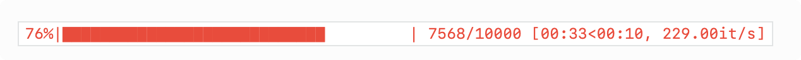

Scraper « le monde » et construire ton propre corpus 🇫🇷¶
Pourquoi tu aurais besoin de scraper¶
Parfois tu te trouves dans la situation où tu dois constituer ton propre corpus pour y mener des tests de classifieur/parseur/etc.
Problèmes légaux¶
Il est à noter que le scraping peut soulever des problèmes légaux liés surtout aux droits d’auteurs. Je te conseille donc de bien te renseigner avant de faire du scraping. Un bon point de départ serait un site comme celui-ci.
Scraper le monde¶
Obtenir des liens d’archives¶
La première chose à faire est de générer un lien d’archives. A titre d’exemple, le lien https://www.lemonde.fr/archives-du-monde/01-01-2020/ contient tous les articles publiés le 1er janvier 2020. La fonction create_archive_link prend starting ear/month/day et ending year/month/day comme entrées et retourne un dictionnaire sous forme de year:links.
[5]:
def create_archive_links(year_start, year_end, month_start, month_end, day_start, day_end):
archive_links = {}
for y in range(year_start, year_end + 1):
dates = [str(d).zfill(2) + "-" + str(m).zfill(2) + "-" +
str(y) for m in range(month_start, month_end + 1) for d in
range(day_start, day_end + 1)]
archive_links[y] = [
"https://www.lemonde.fr/archives-du-monde/" + date + "/" for date in dates]
return archive_links
demo_archives = create_archive_links(2006,2020,1, 12, 1, 31)
import random
random.sample(demo_archives[2015],6)
[5]:
['https://www.lemonde.fr/archives-du-monde/23-08-2015/',
'https://www.lemonde.fr/archives-du-monde/08-07-2015/',
'https://www.lemonde.fr/archives-du-monde/13-10-2015/',
'https://www.lemonde.fr/archives-du-monde/11-01-2015/',
'https://www.lemonde.fr/archives-du-monde/06-07-2015/',
'https://www.lemonde.fr/archives-du-monde/22-10-2015/']
La prochaine étape est de récupérer tous les liens d’article sur la page d’archive. A cet effet t’aurais besoin de 3 modules :
HTTPErrorpour traiter les exceptionsurlopenpour ouvrir des pages websBeautifulSouppour parse
Quand les exceptions agissent en ta faveur¶
Les exceptions sont pratiques dans notre cas car nous avons généré des liens pour des dates comme 02-31, c’est beaucoup facile de catcher ces exceptions que de générer des liens correspondant seulement à des dates existantes. Chaque lien d’article est dans un tag <section> contenant une class nommé teaser.
Il est important de filtrer tous les articles non gratuits avec un span > class icon__premium (à moins que tu aies un compte premium). Tous les liens contenant le mot-clé en-direct sont aussi à filtrer car ce sont des vidéos. Tu aurais compris que web scraping demande des capacités d’analyse des pages webs.

[6]:
from urllib.error import HTTPError
from urllib.request import urlopen
from bs4 import BeautifulSoup
def get_articles_links(archive_links):
links_non_abonne = []
for link in archive_links:
try:
html = urlopen(link)
except HTTPError as e:
print("url not valid", link)
else:
soup = BeautifulSoup(html, "html.parser")
news = soup.find_all(class_="teaser")
# condition here : if no span icon__premium (abonnes)
for item in news:
if not item.find('span', {'class': 'icon__premium'}):
l_article = item.find('a')['href']
# en-direct = video
if 'en-direct' not in l_article:
links_non_abonne.append(l_article)
return links_non_abonne
Sauvegarder les liens d’articles dans un fichier txt¶
Je te propose d’écrire une fonction pour stocker les liens existants car il est peu probable qu’ils ne changent. Ici la date de publication est utilisée pour nommer les fichiers.
def write_links(path, links, year_fn):
with open(os.path.join(path + "/lemonde*" + str(year_fn) + "\_links.txt"), 'w') as f:
for link in links:
f.write(link + "\n")
article_links = {}
for year,links in archive_links.items():
print("processing: ",year)
article_links_list = get_articles_links(links)
article_links[year] = article_links_list
write_links(corpus_path,article_links_list,year)
Scraper un seul article¶
Maintenant tu peux commencer à scraper les textes. Il suffit de scraper tous les éléments h1, h2 et p. Mets recursive=False car tu veux que le “scrapeur” arrête de fouiller dans les structures plus profondes dès qu’il trouve le texte.
Par souci de modularité, écrivons une fonction scrapant un seul article :
def get_single_page(url):
try:
html = urlopen(url)
except HTTPError as e:
print("url not valid", url)
else:
soup = BeautifulSoup(html, "html.parser")
text_title = soup.find('h1')
text_body = soup.article.find_all(["p", "h2"], recursive=False)
return (text_title, text_body)
Classifier les textes par thème¶
La classification par thème est très courante comme tâche en machine learning. Je te propose donc une fonction attribuant à chaque article une catégorie. L’information est déjà contenue dans le lien : https://www.lemonde.fr/politique/article/2020/01/01/reforme-des-retraites-macron-reste-inflexible-aucune-issue-ne-se-profile_6024550_823448.html contient par exemple le mot-clé politique.
def extract_theme(link):
try:
theme_text = re.findall(r'.fr/.*?/', link)[0]
except:
pass
else:
return theme_text[4:-1]
Scraper tout¶
C’est enfin le moment de tout scraper ! Pour ce faire je te conseille d’utiliser le package tqdm car le scraping peut être long et tu voudras savoir où il en est. Voici à quoi ressemble la barre de progression :
def scrape_articles(dict_links):
themes = dict_links.keys()
for theme in themes:
create_folder(os.path.join('corpus', theme))
print("processing:", theme)
#### note the use tqdm
for i in tqdm(range(len(dict_links[theme]))):
link = dict_links[theme][i]
fn = extract_fn(link)
single_page = get_single_page(link)
if single_page is not None:
with open((os.path.join('corpus', theme, fn + '.txt')), 'w') as f:
# f.write(dict_links[theme][i] + "\n" * 2)
f.write(single_page[0].get_text() + "\n" * 2)
for line in single_page[1]:
f.write(line.get_text() + "\n" * 2)
Maintenant que tu as tous les articles comme txt rangés dans des répertoires. Voici une fonction qui permet d’extraire n article de chaque répertoire (thème). Il est configuré à 1000 par défaut.
def cr_corpus_dict(path_corpus, n_files=1000):
dict_corpus = defaultdict(list)
themes = os.listdir(path_corpus)
for theme in themes:
counter = 0
if not theme.startswith('.'):
theme_directory = os.path.join(path_corpus, theme)
for file in os.listdir(theme_directory):
if counter < n_files:
path_file = os.path.join(theme_directory, file)
text = read_file(path_file)
dict_corpus["label"].append(theme)
dict_corpus["text"].append(text)
counter += 1
return dict_corpus
Voilà. Happy Scraping ! Et n’oublie pas de te renseigner pour des problèmes légaux !